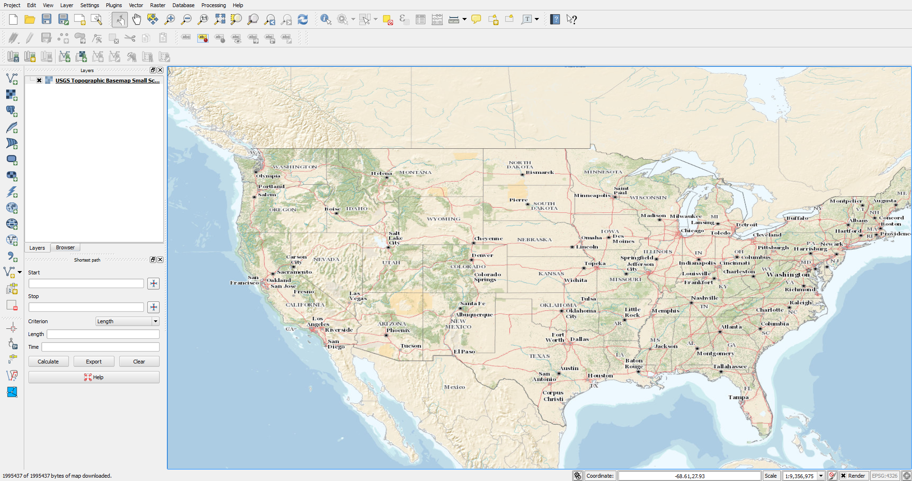
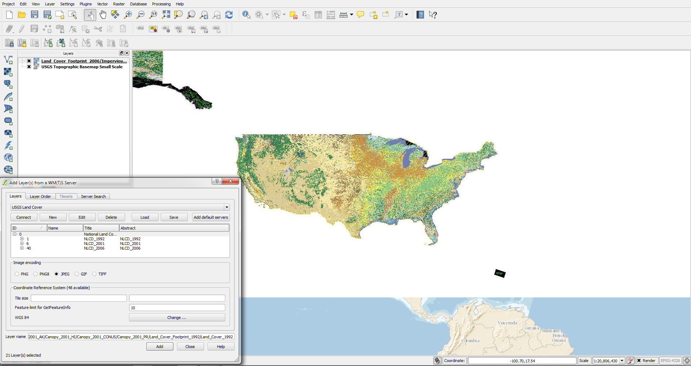
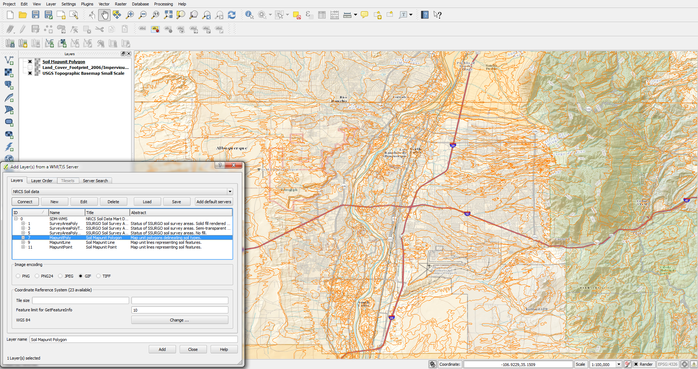
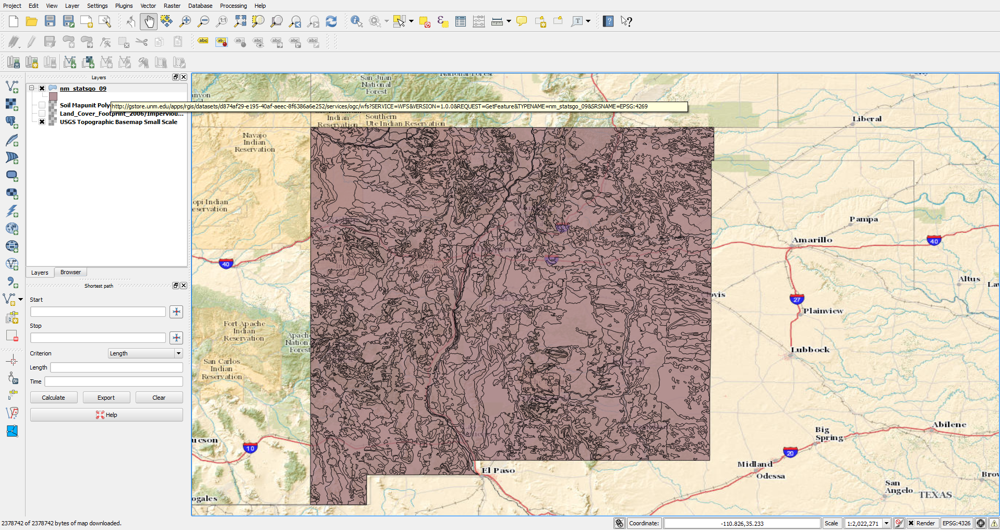
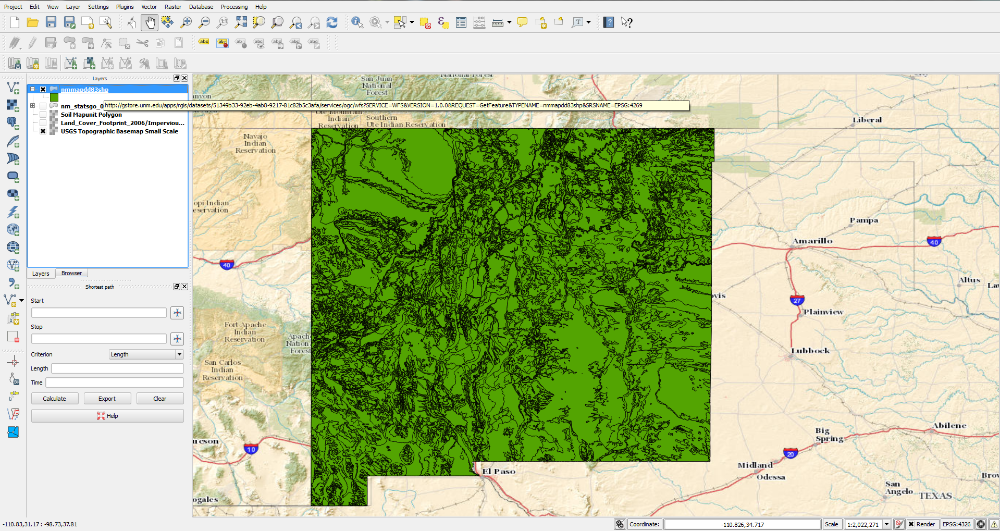
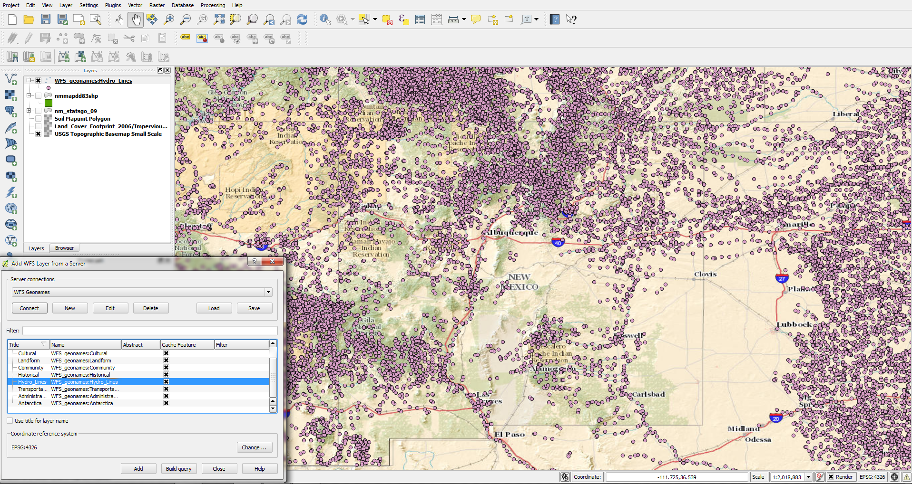

Milestone 10
Justin Collier
04/14/14
WMS Layers
WMS Service: USGS Topo Base Map Primary Tile Cache
Layer Name: USGS Topographic Basemap Small Scale

WMS Service: USGS Land Cover Base Data Layer
Layer Name: National Land Cover Database (NLCD)

WMS Service: NRCS Soil Data Mart WMS Service
Layer Name: Soil Mapunit Polygon

WFS Layers
WFS Service: RGIS Digital General Soil Map of U.S. (New Mexico STATSGO)
Layer Name: nm_statsgo_09
GetCapabilities Request

WFS Service: RGIS Digital Geologic Map of New Mexico - Formations
Layer Name: nmmapdd83shp
GetCapabilities Request

WFS Service: National Map Geo Names
Layer Name: WFS_geonames:Hydro_Lines
GetCapabilities Request

Go Back Home